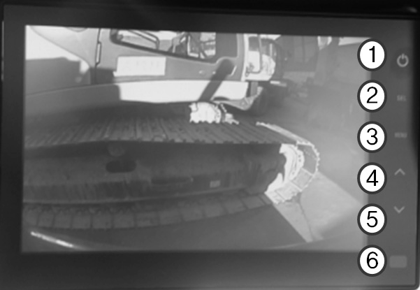

a. Description of the Buttons (Basic Operation)

- 1 POWER button
- Touch the button to turn on the monitor.
- Touch the button again to turn the power off.
- 2 SELECT button
- Touch the button to select a camera.
- The button is used to select an item on the Setup menu.
- 3 MENU button
- Enter the menu selection mode by pressing the Display menu (press shortly) or
the Main menu (press long), using the button.
- Touch once to enter the menu mode.
- Touch again to exit from the menu mode.
- The menu selection OSD menu will disappear within 7 seconds, if no touch is
made.
- Touch the Menu button more than 2 seconds to return to the Main menu from the
sub-menu.
- 4 5. ‘▲’button ‘▼’ button
- Use the ▲ and ▼ button for the available menu option.
- Touch the Menu button to adjust brightness, contrast, color, tint, and other
settings.
- 5 DAY/NIGHT SENSOR
- Automatic brightness control
- Screen brightness is automatically controlled according to surrounding
brightness.